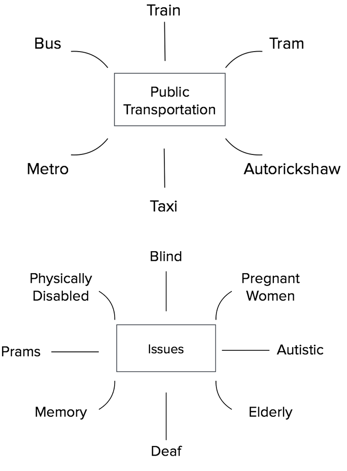
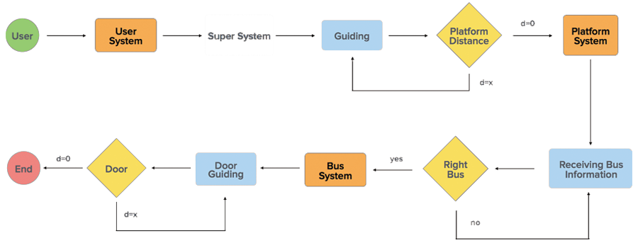

Guiding system for visually impaired in public transportation - collaborative project IAD, TU Darmstadt and IDC, IIT Bombay
Students Exchange program between Industrial Design Centre (IDC), Indian Institute of Technology Bombay, India and IAD, Technische Universität Darmstadt, Germany. This program is an attempt to promote cross cultural problem solving among participating
departments of institutes of India and Germany. This project is an attempt to help the visually impaired people access public transportation with less difficulty and navigate to places of their requirement more efficiently.
Wearable Photo
Decisions Taken

From primary research and literature review done in Darmstadt and Mumbai, the main areas that need help were identified as
Locating origin bus stop
Locating the right bus
Access the bus
System Overview

Persona
Ideation - Wearable

Paul has a device on his hand that interacts with the beacon at the bus stand and directs him to the desired platform. Once at the platform, the device interacts with the correct bus and directs him to the door
Body parts considered for wearable
Concept

Evaluation
The first prototype was made by building a simple glove which gave feedback in the form of vibration on inner forearm above wrist. The wearable is in the form of a glove for ease of wearing during testing to keep the vibrator fastenend in place. The feedback was generated by a wired controlled that we built using gates to give 5 types of vibration combinations.


Download Report from this link